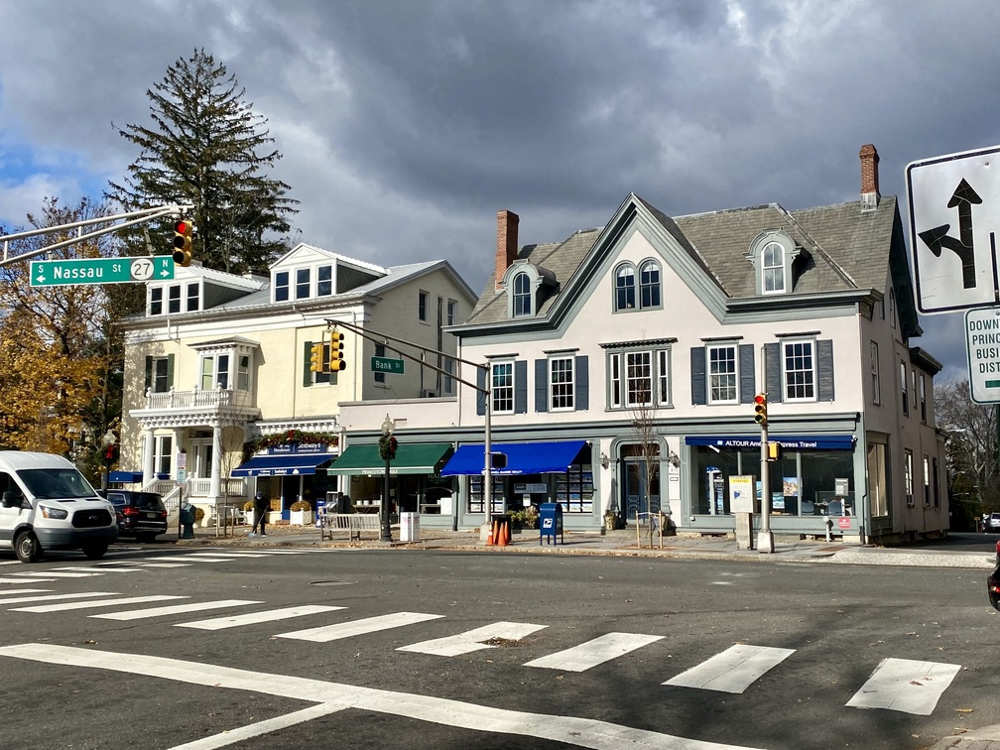
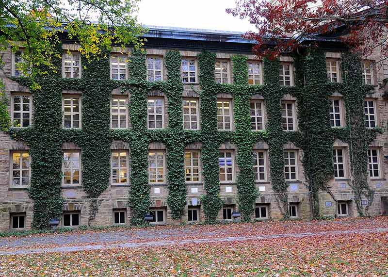

Getting here is easy
Princeton is conveniently located halfway between New York City and Philadelphia and can be easily reached by public transportation or by car.
Halfway between two cities

Take the Dinky from Princeton Junction straight into the campus and Arts District.
01How do I get here by train?
Both Amtrak and NJ TRANSIT trains stop at nearby Princeton Junction. You will need to switch to a local shuttle train called the “Dinky” to get right to the Princeton University campus and Arts District.
02Which bus companies serve Princeton?
Four bus companies serve the Princeton area: Greyhound, N.J. Transit Bus, Coach USA and Megabus.
03Can I drive in?
Princeton is easily accessible from several main highways and interstates, including the NJ Turnpike, I‑95, US Route 1 and Route 206.
04Where do I park?
Most streets in Princeton have metered parking. There are also several parking garages in downtown Princeton.
05Which airport is closest?
The closest international airport is Newark Liberty International at 39 miles away, followed by Philadelphia International Airport at 52 miles. Two local airports serve the region: Trenton‑Mercer Regional Airport in nearby Ewing, and the Princeton Airport on Route 206.
Airports & stations
Princeton Junction
Amtrak and NJ TRANSIT stop here. Switch to the Dinky for the campus and Arts District.
Newark Liberty
The closest international airport — 39 miles from Princeton.
Philadelphia Intl.
The second closest international airport — 52 miles away.
Trenton-Mercer
In nearby Ewing. The Princeton Airport on Route 206 also serves the region.
Swipe through the cards
Once you arrive




Everything downtown is within walking distance of the shuttle.